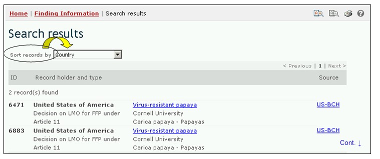
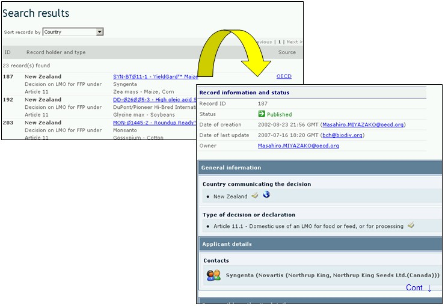

URL: http://bch.cbd.int/database/decisions/
En el marco del Protocolo de Cartagena, las Partes tienen la responsabilidad de que la información sobre sus decisiones relevantes, declaraciones y otras comunicaciones esté disponible a través del CIISB.
La interfase de búsqueda de información acerca de Desiciones de País y otras Comunicaciones puede ser obtenida en el menú desplegable Búsqueda de Información en la barra de navegación, o en el vínculo en la barra lateral izquierda del menú de la página Búsqueda de Información, o en el vínculo del texto Decisiones de País y otras Comunicaciones de la misma página.

Esta base de datos permite a los usuarios buscar decisiones y otras comunicaciones relacionadas con:
-
Registros de Evaluaciones de Riesgo
-
Todas las decisiones en el marco del Acuerdo Fundamentado Previo (AFP)
-
Artículo 10.3(a) – Aprobación de una importación con o sin condiciones
-
Artículo 10.3(b) – Prohibición de la importación
-
Artículo 10.3(c) – Solicitud de información relevante adicional
-
Artículo 10.3(d) – Información al notificador sobre la extensión del período de tiempo
-
Decisión sobre una liberación de OVM, tomada antes de la estrada en vigor del Protocolo
-
-
Todas las decisiones en el marco del Artículo 11
-
Artículo 11.1 – Uso doméstico de un OVM para alimento humano, animal o procesamiento
-
Artículo 11.4 – Importación de un OVM para alimento humano, animal o procesamiento tomada en el marco de la legislación nacional
-
Artículo 11.6 - Importación de un OVM para alimento humano, animal o procesamiento tomada en ausencia de legislación nacional
-
-
Decisión, declaración, notificación o informe en el marco de los Artículos 6, 13, 14, 17 y 25
-
Artículo 13.1a – Procedimiento Simplificado, importación al mismo tiempo que la notificación
-
Artículo 13.1b – Procedimiento Simplificado – importación que se exceptúa del AFP
-
Artículo 14.4 – Regulaciones nacionales que se aplican a importaciones específicas
-
Artículo 17.1 Notificación – Movimiento transfronterizo involuntario
-
Artículo 25.3 Notificación - Movimientos transfronterizos ilegales
-
Artículo 6.1 - Tránsito
-
Artículo 6.2 – Uso confinado
-
-
Decisión sobre importación o liberación de OVM, tomada antes de la entrada en vigor del Protocolo
-
Declaración hecha en el marco de la ratificación o accesión
-
Ensayos de campo no cubiertos por el AFP
-
-
Otras decisiones, declaraciones, notificaciones o informes
En la página de Búsqueda de Decisiones de País y Otras Comunicaciones hay seis cuadros para referenciar los criterios de búsqueda en la base de datos. Cada uno de estos tiene un menú desplegable en el que se puede seleccionar el criterio de búsqueda. La búsqueda por defecto es el primer elemento que aparece en la lista desplegada. En la parte derecha de cada cuadro, un botón le permite al usuario activar selecciones múltiples. Una vez se está en el modo de selección múltiple, es posible agregar más criterios haciendo clic en el criterio y presionando al mismo tiempo la tecla Ctrl (Control).

Cuadro 1 [Seleccione un país] Un menú desplegable presenta una lista de todos los países, de tal modo que los usuarios pueden seleccionar uno o más países específicos en cada búsqueda.

Cuadro 2 [Seleccione un grupo de países] Un menú desplegable presenta una lista que contiene las mayores agrupaciones geográficas y políticas de países y permite seleccionar solamente aquellos registros que han sido enviados por los miembros del grupo o grupos seleccionados.

Cuadro 3 [Tipo de decisión, declaración, notificación o informe] presenta una lista de todos los tipos de decisiones y otras comunicaciones disponibles en la base de datos. Esta lista puede utilizarse para limitar la selección a decisiones o comunicaciones relativas a aspectos específicos de la utilización de OVM.

Cuadro 4 [Tipo de organismo vivo modificado] permite al usuario aplicar filtros con el objeto de restringir la búsqueda a los registros que están específicamente relacionados con el criterio de selección del OVM. Los filtros disponibles son los siguientes: (i) OVM, identificado generalmente con el Identificador Único (Ej. MONØØ81Ø-6), (ii) Tratamiento introducido o modificado (Ej. Tolerancia al Glifosfato), (iii) Nombre del gen (Ej. Cry1A(b)), (iv) Técnica utilizada (Ej. Mediado por Agrobacterium), (v) Organismo parental - nombre común (Ej. Maíz), (vi) Organismo parental -nombre científico (Ej. Zea mays) o (vii) Solicitante – (campo de texto libre - Ej. Monsanto).
Seleccionando uno o más criterios de filtro del menú desplegable se abren cuadros de búsqueda adicionales con un menú desplegable de opciones, cada una de los cuales está relacionada con el filtro seleccionado. Es posible utilizar múltiples filtros usando la tecla Ctrl. (Ej. Haciendo clic en el criterio relevante mientras se oprime la tecla Ctrl).

Cuadro 5 [Fecha del registro] permite al usuario que limite la búsqueda de acuerdo con la fecha en la que el registro ha sido ingresado al CIISB. El menú desplegable proporciona un número de opciones para limitar la búsqueda solamente a aquellos registros que han sido enviados dentro del período de tiempo seleccionado (Ej: ‘último día’, ‘último mes’, ‘último año’, etc.).

Cuadro 6 [Búsqueda por palabras clave] Brinda la oportunidad de utilizar palabras clave para restringir la búsqueda. El usuario puede utilizar la sintaxis estándar de palabras clave (combinación de los operadores Y/O) para buscar con múltiples palabras, o partes de palabras (Ej. “Importación O Exportación”). La búsqueda con palabras clave permite obtener solamente registros que contengan el texto exacto y no sinónimos que no hayan sido insertados (Ej: Una búsqueda con la palabra clave “Maíz” producirá una lista de registros que contienen la palabra “Maíz” pero no los registros que contengan “Zea mays”).

La página de búsqueda ofrece tres botones para obtener la lista de registros. El botón Busque Ahora (tanto en la parte superior como inferior de la interfase de búsqueda) permite al usuario activar una búsqueda basada en los criterios seleccionados en los cuadros de la tabla de búsqueda. Los resultados de búsqueda son ordenados alfabéticamente, por defecto, de acuerdo con el nombre de país. El botón Busque todos los registros (en la parte inferior de la interfase de búsqueda) permite al usuario obtener una lista de todos los registros en esta base de datos.
Una búsqueda solo mostrará los primeros 1000 registros, aunque exista en la base de datos un número mayor de registros que corresponda con el criterio de selección utilizado.

Las páginas de Resultados de Búsqueda poseen una ventana de ordenamiento arriba de la lista de los registros encontrados. Esta puede utilizarse para ordenar los registros de acuerdo con criterios específicos para esa categoría de información. Observe que los resultados cambiarán cuando el usuario ajusta los criterios de búsqueda.

Ejemplo. Un usuario desea encontrar todas las decisiones tomadas por Nueva Zelanda bajo el Artículo 11 del Protocolo de Cartagena. Seleccione Nueva Zelanda en el cuadro Seleccionar un país. Seleccione todas las decisiones bajo el Artículo 11 en el cuadro Tipo de decisión, declaración, notificación o reporte. Presione el botón
Los resultados de la búsqueda se muestran como una lista de registros. La información detallada acerca de cada registro puede ser vista seleccionando el título de la decisión (letra en negrilla de color azul).

